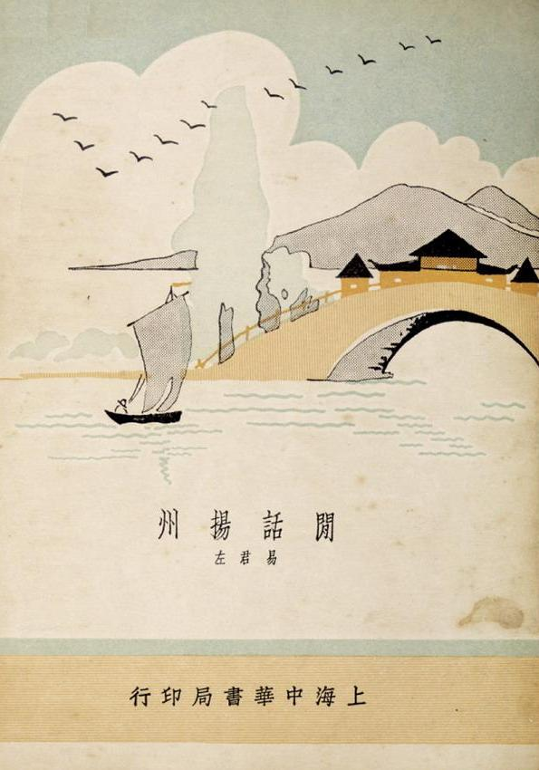

–谨以此文紀念毛润之逝世四十周年
毛润之《沁园春 。雪》一词， 今天已是妇孺皆知, 几乎成了诗词的代名词. 各种模仿之作充斥网络，从成功人士到黄口小儿，莫不以吟诵它为快事。词中那种褒贬古人，惟我独尊的狂傲之气， 很能让人找到男人的感觉， 豪气勃发之际恍惚自己就是那个指点江山的英雄。
但这首词发表的背后故事却不太为人知晓。 它的发表，当年曾引起了一场笔墨战，共有三十多人参加，唱和之作达四十多首。这场 “沁园雪战” 堪称国共决战的前奏，为毛润之问鼎神州打下了舆论基础，意义非同寻常。
毛润之的词最初是送给柳亚子的，它的发表和后来引发的雪战，柳亚子都是关键人物。
柳亚子的名字，大多数人并不不陌生，他是毛诗词中出现的少数几个人名之一，在那个文人被革命的年代，柳亚子是少数幸免的。事实上， 柳亚子的一生也就是因为与名人的关系而出名。他当过孙中山的秘书， 早年创办“南社”，结交的都是民国的名人，宋教仁，汪兆铭，廖仲恺是成员之一，他曾炫耀同盟会干部一半出自南社。他一生发表的诗词很多，数量可以跟乾隆媲美，但为人传诵的精品很少，倒是别人的唱和之作往往很经典。
柳亚子与毛润之的交往始于1925年，毛在广州担任国民党中央宣传部代理部长，柳是江苏省党部宣传部长，二人是上下级关系，但似乎没有诗词上的唱和，否则如果他当时看到了毛的《沁园春。长沙》，一定会亮瞎双眼的。1945年8月，毛到重庆谈判，期间会见了这位多年前的故人，双方交谈甚欢。回家之后柳亚子夜不成寐，赋诗一首, 并发了朋友圈：
阔别羊城十九秋，重逢握手喜渝州。
弥天大勇诚能格，遍地劳民乱倘休。
霖雨苍生新建国，云雷青史归同舟。
中山卡尔双源合，一笑昆仑顶上头。
一周后， 毛润之到南开中学回拜柳亚子，柳即以此诗相赠并索句。毛没有当即回复， 而是在一个月之后抄录了一首旧词，并附信：“初到陕北看见大雪时，填过一首词，似于先生诗格略近，录呈审正。”， 这就是著名的《雪》。
毛润之毕竟是大英雄，如果是常人写了一首这么好的词， 恨不得马上发朋友圈， 但他却在文件夹里存了九年！按照常理柳亚子以诗相赠， 他应该回赠一首唱和的诗， 你也许会说他太忙， 但以他的水平一个月的时间不至于写不出一首诗来， 他在后来更忙的时候不就写过吗。 毛的诗词不多但也不少， 为什么独挑这一首？ 这决不会是随意的，英雄作的每一件事都有目的性，他挑这首词显然是为了让它在此时公诸于世。他在下一盘大棋， 而柳亚子就是棋子。
话说柳亚子看到这首词后， 当时就跪了， 他经营南社多年， 委婉细腻的诗词见得多了， 几时看到过这么大气磅礴的作品？他在《索句后记》中写到：“余索润之写长征诗见惠，乃得其初行陕北看大雪《沁园春》一阕，读之余叹为中国有史以来第一作。高如苏犹未能抗耳，况余子乎?"。他欣喜若狂， 当即就写了和词一首：
沁园春·次韵和润之咏雪之作不尽依原题意也
廿载重逢，一阕新词，意共云飘。叹青梅酒滞，余意惘惘；黄河流浊，举世滔滔。邻笛山阳，伯仁由我，拔剑难平块垒高。伤心甚，哭无双国士，绝代妖娆。
才华信美多娇，看千古词人共折腰。算黄州太守，犹输气慨；稼轩居士，只解牢骚。更笑胡儿，纳兰容若，艳想浓情着意雕。君与我，要上天下地，把握今朝。
然后他就想晒朋友圈， 但原作是别人的， 需要征求原作者同意， 此时毛润之已回陕北。 柳亚子就跑到中共办事处找周恩来， 周恩来的回答是：No。
柳亚子十分郁闷， 他在后来的跋文中写到：
"毛润之《沁园春》一阕，余推为千古绝唱，虽东坡、幼安，犹瞠乎其后，更南唐小令，南宋慢词矣。中共诸子，禁余流传，讳莫如深，殆以词中类帝王口吻，虑为意者攻之资；实则小节出入，何伤日月之明。固哉高叟，暇当与润之详论之。余意润之豁达大度，决不以此自歉，否则又何必写与余哉。情与天道，不可得而闻，恩来殆犹不免自郐以下之讥欤？余词坛跋扈，不自讳其狂，技痒效颦，以视润之，始逊一筹，殊自愧汗耳！瘦石既为润之绘像，以志崇拜英雄之慨；更爱此词，欲乞其无路以去，余忍痛诺之，并写和作，庶几词坛双璧欤?"
周恩来为什么禁止发表这首词？不得而知。按照柳亚子的说法，是其中的帝王口吻怕被别有用心的人攻击，这当然是一个合理的解释。但柳亚子认为这是"小节出入"。柳亚子自号亚子，又名人权，字亚卢，据说是为了崇拜法国思想家卢梭。柳亚子一直追求民主自由，反对蒋氏一党专制，为何会觉得帝王思想是小节呢？显然是崇拜让他失去了理智。柳亚子似乎生来就是做粉丝的，他自视才高八斗，一腔热血，可惜一直未遇明主。早年追随孙中山，但孙却早逝，后来又追随汪精卫，汪又当了汉奸。今天柳亚子终于找到了那个对的人，那个他可以追随一生的明君英主，他怎么能不欣喜若狂？
在上面的文字中还可以看出柳亚子因为狂热的崇拜而到了逻辑混乱和语无伦次的地步。 比如他对周恩来的怨言："恩来殆犹不免自郐以下之讥欤"，认为周恩来是看不起毛润之的词。"自郐以下" 典出《左传》， 意思是水平太低不值一看的作品。不需要用脑袋想都知道周恩来断不至于那么评价毛的作品。柳亚子另一个逻辑混乱的地方， 是他一方面赞美毛是"中国有史以来第一" ，另一方面又把自己比喻成与毛并驾齐驱的"词坛双璧"，这显然就有一点自我感觉良好了。 他的这种搞不清粉丝与偶像的关系的毛病是导致后来的"牢骚"事件的重要原因， 这是后话。
没有任何力量可以阻止柳亚子晒朋友圈的决心。 直接晒不行， 他就间接晒， 报刊不让发表， 他就把它写成书法， 晒书法总可以吧。 于是他找到了画家尹瘦石， 尹瘦石也是一个毛粉， 曾经为毛画过肖像， 二人就举办了一个《柳诗尹画联展》把那首词和毛的肖像画一起展出了（有意思的是， 后来《新华日报》专门为联展出了特刊，毛润之为特刊亲笔题写了刊头，这似乎与周恩来最初的态度大相径庭）。这还不够， 柳亚子又把自己写的那首和词在《新华日报》发表， 既然和词已经发表， 原作又已经展出，再不发表原作就没有意义了， 于是那首著名的《沁园春。雪》千呼万唤始出来， 终于在1945 年11月14日，在《新民报》副刊“西方夜谭”发表， 编辑吴祖光在按语中写到：
"毛润之先生能诗词，似鲜为人知。客有抄得其《沁园春·雪》一词者，风调独绝，文情并茂，而气魄之大乃不可及。据毛氏自称则游戏之作，殊不足为青年法，尤不足为外人道也"。
话说毛润之《沁园春。雪》一词在柳亚子的不懈努力下最终得以发表，但它的发表很快在江湖上引发了一场昏天黑地的雪战。 交战双方的领军人物一个是柳亚子， 另一个就是易君左。
易君左的名字， 今天不太为人知晓， 但在民国时期， 他可是名人， 有对联为证：
左舜生姓左不左，易君左名左不左，两君胡适,其于右任乎;
梅兰芳伶梅之梅，陈玉梅影梅之梅，双玉徐来,是言菊朋也。
易君左闲话扬州，挑起扬州闲话，易君，左矣;
唐生智誓守南京，导致南京失守，唐生，智乎？
说起易君左， 都要说《闲话扬州》，这是一个说烂了的话题，但因为与后面的故事有关，又不得不说。
在中国历史上有一本禁书，它不是因为政治，宗教，色情的原因被官方封杀的，而是在中国言论最自由的时期和言论最自由的地方上海被禁止发行的。这本书就是《闲话扬州》，作者易君左， 中华书局1934年出版。 它为什么被封杀？ 因为它伤害了扬州人民的感情，引起扬州人民的公愤。

易君左为什么写闲话扬州？是因为闲的，因为淞沪战事，他工作的江苏省教育厅迁到扬州，刚到扬州的时候，整日无所事事，游山玩水。游玩之余，顺带写点游记，后来被他的同乡上海中华书局编辑所所 长舒新城发现了，拿去发表，竟然很畅销。然后就惹出麻烦了。书中对扬州人的生活习惯颇多批评，有点类似丑陋的中国人的扬州版。这也难怪，当时国难当头，看到扬州人每天悠闲懒散的生活方式，喝茶，洗澡，泡妞，抽大烟，作为一个风风火火的湖南人，他心里着急啊。但易君左显然犯了一个错误，用现在的话说就是情商低，他不知道人是不喜欢批评的，群体就更不能批评. 要批评也可以，把全体包括一起批评，比如鲁迅骂整个中国人，怎么骂都没关系。如果你单独批评某个地方的人，那就是地域歧视。于是扬州人民表现了空前的团结，易君左你什么意思？你对扬州有多少了解？扬州有那么多正能量的人和事你不写, 专写我们落后的东西，而且还夸大事实，还说什么天下妓女出扬州，真是是可忍孰不可忍！他们集会请愿，成立了究易团，一定要严惩易君左，不达目的誓不罢休。打不赢日本人，还打不赢你一个湖南文人吗？
要说易君左的书中说完全没有地域歧视也不是事实，鲁迅就认为有，朱自清也认为有。易君左大概是有一点湖南人优越感的。自晚清湘军崛起以来，湖南人在江湖上比较强势，但这正是江浙人一直耿耿于怀的地方，他们认为长沙的繁华是湘军从江浙烧杀抢劫的结果。易君左在一定程度上是做了替罪羊。
其实地域优越感和地域歧视有点像小孩之间的炫耀。各地在历史上都会有兴旺时期，会有几个名人，也有不行的地方。比如湘军有抬棺出征的左宗棠，也有临阵脱逃的唐生智 。风水轮流转，历史到了上世纪末，当湖湘子弟靠炫耀他们的先辈名人过日子的时候，扬州倒是出了一个国家元首。及至沿海开放，百万湘女下广东，倒有一种特区妓女出湖南的感觉，历史终于给扬州人出了一口恶气。好在现在妓女已不是一个贬义词，而且改称小姐了。
与官二代出身，北大毕业，留过洋的易君左相反，他的湖南老乡毛润之，这个湘潭山村土财主的儿子，师范毕业，一生改不了湘潭口音的土老冒，却不搞湖南人优越感，不但自己不搞，他还告诫他的党员要搞五湖四海，坚决反对地方主义。人的胸襟，大概不是出身和教育决定的。
易君左和柳亚子的背景有些相似，二人都出身名门，都是愤青。柳亚子与汪精卫关系密切，而易君左和周佛海则是好基友，抗战中都分道扬镳。抗战结束后汪氏被蒋介石毁坟灭尸，柳亚子的作品中从此不提此人名字(以XXX代替)。周佛海也身陷牢狱，昔日亲朋好友避之唯恐不及，只有易君左前往监狱探望，友谊归友谊，政治归政治，易君左的为人似乎更人性化些。
传说毛润之的词发表之后，蒋介石大为震惊，令陈布雷组织宣传部门人员予以批判。 随后国共双方的文人就展开了一场唇枪舌箭的骂战。国民党方面的代表人物除易君左外，还有王新民、耘实、尉素秋, 张宿恢等15人，共产党方面阵容比较强大，有柳亚子、郭沫若、聂绀弩、黄齐生、邓拓、陈毅等参加。纵观双方词作的内容，基本上是国民党方面攻击毛润之共产党造反，而共产党方面则集中攻击易君左。
请看易君左在《和平日报》发表的第一首词：
乡居寂寞，近始得读《大公报》转载毛泽东，柳亚子二词。毛词粗犷而气雄，柳词幽怨而心苦。因次成一韵，表全民心声，非一人私见；望天下词家，闻我兴起！
国脉如丝，叶落花飞，梗断蓬飘。痛纷纷万象，徒呼负负；茫茫百感，对此滔滔。杀吏黄巢，坑兵白起，几见降魔道愈高？明神胄，忍支离破碎，葬送妖娆。
黄金难贮阿娇，任冶态妖容学细腰。看大漠孤烟，生擒颉利；美人香草，死剩离骚。一念参差，千秋功罪，青史无私细细雕。才天亮，又漫漫长夜，更待明朝。
从上文可以看出易君左成为国民党方面的首领，是他自告奋勇表达“全民心声”。但词的内容却似乎没有抓到要点，毛词的要害，周恩来已经说得很明白了，就是帝王思想，只要抓住这一点，攻击他一面宣扬宪政民主，反对一党专制，而自己却想当皇帝，就有攻击力。但易君左和他的同党却抱着他们那个陈旧的宣传思想，高高在上的批判共产党造反，分裂国家，颠覆政权, 破坏稳定，十恶不赦。这显然是没有说服力的，因为国民党也是造反起家，也是受过苏联人扶持的。
再看看共产党方面的回击，内容大抵相似，录柳亚子和郭沫若两首为例：
柳亚子
再用“飘”字韵为易君左赋，小儿无礼固当迭叱也，十二月七日作
大好神州，国父云亡，道统蓬飘。痛惠阳不禄，天乎愦愦；湘江崛起，誓挽滔滔。谁是黄巢，谁为白起？青史他年月旦高。支离甚，笑龙阳馀孽，九尾妖娆。
美新词笔徒娇。向楚国章华学细腰。记怀宁按拍，曾传十错；子云投阁，空反《离骚》。谣诼蛾眉，评量螓首，花面丫头任饰雕。谁怜惜，只赭衣傅粉，坐待明朝。
郭沫若
说甚帝王，道甚英雄，皮相轻飘。看古今成败，片言狱折；恭宽信敏，无器民滔。岂等沛风，还殊易水，气度雍容格调高。开生面，是堂堂大雅，谢绝妖娆。
传声鹦鹉翻娇，又款摆扬州闲话腰。说红船满载，王师大捷；黄巾再起，蛾贼群骚。叹尔能言，不离飞鸟，朽木之材未可雕。何足道！纵漫天迷雾，无损晴朝。
他们词中表达的意思，一是造反有理，谁有本事谁坐天下，另外就是对易君左的人身攻击。其实易君左的词也是有弱点的， 那就是他狂妄自大，自封为全民的代表，你易君左算老几， 全国人民什么时候选你当代表了? 但柳郭二人似乎没有在意这点，反而抓住扬州闲话不放，更辱骂易君左为“龙阳余孽，九尾妖娆”，用诗词骂人，虽然有辱斯文， 却也是革命文学的风格。
总得来说，双方的唱和作品，格调水平都不高，与毛的原词相比，都属于“郐以下”的水平。
除了那些互相攻击的词作之外，也还是有个别显示诗人悲悯情怀的作品，兹录一首以供欣赏：
蜀青 12月19日《大公晚报》：
用原字句敬献作者,暨出席政治协商会议诸公
卅载兵争，千里坟堆，万里血飘。幸长城內外，还余莽莽，大河上下，尚有滔滔。仁者安人，智者化俗，不嗜杀人意最高！试放眼，看弹丸瑞士，绝代妖娆。
将军倚马多娇，念塞上单衣雪满腰。请记取秦皇、金销十二，服膺宋祖，杯解腥骚。一代天骄，原子宇宙，何必荒城竞射雕。民苦矣！莫谈谈打打，暮暮朝朝。
这场雪战的最大受益者无疑是毛润之，他一直沉默不语，静观一帮书生叫骂。回过头来看这似乎是精心策划的宣传战， 从毛亲自为《柳诗尹画特刊》题字可以看出， 毛润之是很喜欢宣传他自己的。 按照常理他来参加和平谈判， 刚刚签署协议就发表一篇有帝王野心的词是不合时宜的， 这大概是周恩来最初的想法。 但毛润之是英雄， 英雄是不按常理出牌的。 他就是要暴露他的野心， 一方面给天下人打招呼， 另一方面震慑一下蒋介石， 从心理上打垮对方。事实证明蒋介石上当了， 在毛的强大气场面前乱了阵脚。蒋介石何许人也？ 一个优柔寡断的将军， 一个靠女人往上爬的政治家， 一个为了追女人而改变信仰的男人！他哪里比得上 毛润之的英雄霸气，毛润之是顶天立地的男人， 一个男人为之追马牵衣， 女人为之翩翩起舞， 文人为之歌功颂德的大英雄。 双方相比， 在气势上高下已分。
时光荏苒，雪消云散。当年的风云人物今天都成了故人，伟业丰功，已成故事。
当年的毛粉，那场雪战的关键人物柳亚子，在著名的牢骚事件之后闭门不出，他似乎终于搞清了粉丝与偶像的关系，1958年病逝，得以善终。他当年的队友郭沫若、聂绀弩、尹瘦石等人则没有那么好的运气， 在后来的历次运动中死得很惨或者活得很惨， 没有摆脱历代文人依附权力最终成为权力牺牲品的宿命。
易君左在他人生的第二个重要关头再次作出了明智的选择，他去了香港，从此远离政治，靠写作为生，过着清苦的日子，既保持了独立的人格, 又保全了身家性命。就连他在国内的子女也没有因为他这个"反动文人"而受到牵连， 堪称奇迹。及至上世纪末两岸关系缓解，他的家乡湖南汉寿县建立了“中华易君左文库”，以纪念这位“龙阳才子”的文学成就。
1958年，包括《沁园春。雪》在内的《毛泽东诗词》正式出版，从此天下诗词家皆成了“郐以下”。